Profissional com múltiplas capacidades, conhecimentos em diversas áreas, desde a produção de interfaces para Websites, até a modelagem da experiência, usabilidade, captação de requisitos e marketing digital.
Atualmente trabalhando em projetos como Freelancer (Web Designer / Social Mídia), já atuei em diversas áreas diferentes da produção de software. Já trabalhei como gerente de projetos alocado no Exército Brasileiro (Parceria entre o CEFTRU / UnB) juntamente com o CDS (Centro de Desenvolvimento de Sistemas do Exército). Também já participei de projetos como Administrador de Bancos de Dados MySQL, Pesquisador na área de dados abertos, e hoje com essa gama de conhecimentos adquiridos trabalho como Freelancer de Webdesigner / UX | UI Designer / Social Mídia. Conheço a prática de métodologias ágeis (SCRUM / SAFe / LEAN) e tradicionais (RUP). Conhecimentos em áreas de acessibilidade / Experiência de Usuário e diversas outras tecnologias relacionadas.
Web Designer / Designer Gráfico
Experiência de 8 anos
Social Media
Experiência de 2 anos
Gerência de Projetos
Experiência de 2 anos
HTML5 / CSS3 / jQuery / Bootstrap
Experiência de 8 anos
Conhecimentos
Com um perfil Multidisciplinar, tenho uma formação que permite um entendimento amplo sobre qualquer fase do desenvolvimento de um software, desde a elicitação durante o processo de analise até o deploy da solução em ambiente de homologação.
Web Design
Design Gráfico
UX Design
UI Design
Levantamento de Requisitos
Marketing Digital
Social Mídia
Planejamento
Execução
Monitoramento de Campanha
Corel Draw
Adobe Photoshop
Adobe Indesign
Adobe Spark
Adobe Acrobat DC
Ferramentas de Prototipagem
Ferramentas para criação de protótipos de alta e baixa fidelidade baseado em insumos de pesquisas de usuários. Wireframes, Protótipos Funcionais e com navegação interativa.
Com um perfil diversificado, possuo conhecimentos em áreas diferentes que conectam-se entre si de forma harmônica. Desde Web Designer / UX / UI Designer até Modelagem de Processos / Gestão de Projetos / Engenharia de Requisitos e complemento com conhecimentos da área de Marketing Digital e Design.
Profissional Autonomo
Freelancer
2015 - Atualmente
Atualmente, participo de projetos como freelancer desenvolvendo Websites, Planejamento / Criação e Execução de Redes Sociais para clientes.
CEFTRU UnB
Gerente de Projetos Jr.
2014 - 2015
Responsável por equipe com o objetivo de extrair requisitos de software à partir de modelos de processso de negócio (BPM) modelados previamente e posteriormente estudados para extração destas informações potencialmente funcionais a uma solução.
IBTI / Ministério da Saúde
Pesquisador
2012 - 2014
Neste projeto, a tarefa da equipe de pesquisadores a qual estava inserido era efetuar pesquisas e reunir conhecimento sobre as tecnologias para a concepção do Prontuário Eletrônico de Saúde, tecnologias relacionadas a Open Data, E-Health, Informática em Saúde e diversas outras.
UnB Gama
Web Master
2011 - 2013
Projeto que tinha como desafio a viabilização de um novo portal informativo para a faculdade, utilizando o CMS Wordpress e tecnologias inerentes ao desenvolvimento web, a equipe envolvida construíu para a faculdade um template personalizado com o objetivo de torna-lo um produto da faculdade. Neste projeto, foi de minha responsabilidade atuar como Scrum Master, utilizando de métodologia SCRUM para gerenciar o projeto durante sua execução.
SOF/MPoG
Web Designer
2006 - 2008
Atuação na área de Designer Gráfico na produção de mídias publicitárias de acordo com demandas do setor de comunicação da Secretaria de Orçamento Federal e também na área de produção web, auxiliando na reformulação do website da secretaria, desenvolvido em CMS Zope/Plone.
Educação
Sobre Minha Educação
Com interesse em construir um perfil multidisciplinar, procurei durante minha vida acadêmica buscar oportunidades que me proporcionassem este caminho. Venho da formação técnica de sistema de informações, onde descobri o fascinante mundo do desenvolvimento de software e desde então tenho buscado conhecimentos que reforcem minhas habilidades da área de análise de negócios, análise de requisitos e inteligência de negócio.
Universidade de Brasília
Eng. de Software
2010 - 2015*
Curso de graduação direcionado ao estudo de todas as etapas para o desenvolvimento de uma solução de software, desde o nível de analise e negociação até as inciativas para codificação da solução. São estudados também no curso disciplinas de Governança de TI, Modelagem de Processos, Técnicas de Medição Funcional, entre outras.
Anhanguera
Ánalise de Sistemas
2008 - 2010
Um curso de curta duração direcionado ao aprendizado de tecnologias para desenvolvimento de aplicações web, com foco em análise de sistemas utilizando-se de métodos preditivos para gestão de projetos de produtos de software.
ECT
Sistema de Informação
2006 - 2008
Preparação técnica para inserção no mundo do desenvolvimento de produtos de software, direcionado a construção de pequenas aplicações, utilizando-se de metodologias conhecidas de desenvolvimento web. O curso também oferece uma base de conhecimento de redes, infraestrutura, inglês técnico e outras.
Cursos Complementares
Complemento do Conhecimento
Além dos conhecimentos nas áreas de formação longa, também possuo conhecimentos diversificados em áreas complementares para criação de produtos com maior qualidade.
O Facebook Essencial é focado em um processo de venda simples de 3 passos: Atrair, Engajar e Converter. Esses são os 3 pilares usados por pequenas e médias empresas para até quintuplicar suas vendas usando o Facebook, isso nos mais variados segmentos que você possa imaginar.
Segundo uma pesquisa da Hyper Island, a experiência dos consumidores já é considerada mais importante do que o preço e o produto como diferencial competitivo para as marcas, e por isso as empresas buscam cada vez mais profissionais de UX Design para ajudá-las a superar esse desafio e a enxergar o panorama de forma mais ampla do que jamais fizeram.
Web Semântica / Open Data
UnB / CDT / IBTI
Duração: 40h /
Ano: 2014
Registro Eletrônico de Saúde, Centro de Excelência em SOA e Arquitetura Corporativa
Wordpress
Studio Online
Duração: 33h /
Ano: 2012
Gerenciar e personalizar blogs e websites dinâmicos utilizando o WordPress como gerenciador de conteúdo, criar e administrar usuários com diferentes níveis de acesso, configurar o WordPress, publicar e gerenciar conteúdo e comentários, criar páginas com conteúdo multimídia, personalizar blogs e websites, instalar, configurar e gerenciar plug-ins, criar e administrar widgets. Tudo isso sem necessidade de conhecer uma linha de código, sem Html e sem Css, feito para você que quer implementar templates e blogs.
Web Standards
Studio Online
Duração: 33h /
Ano: 2012
O curso de Web Standards procura formar profissionais de uma maneira teórica e prática, tornando assim o estudante apto a planejar e desenvolver as partes visuais e técnicas que envolvem a composição de um site. O aluno também aprenderá todos os requisitos e ferramentas necessárias para a publicação de suas páginas na rede.
Design Gráfico
Senai DF
Duração: 120h /
Ano: 2006
O profissional design é responsável por toda a criação de arte de uma empresa. É um profissional que está sendo bastante valorizada dentro do mercado nacional, principalmente se já tiver experiência. Esse tipo de profissional vem buscando espaço no segmento freelancer, isso porque a oferta de trabalho é cada vez maior, uma vez que, a empresa não quer se fixar ao profissional e o profissional, tem a opção de trabalhar em casa, fazendo os seus horários.
Portfólio
Alguns dos meus trabalhos de web, frontend, mobile e design
Neste espaço, procuro expor meus últimos trabalhos, com a maior qualidade possível e com a exposição dos detalhes de maior relevância em cada um deles. Com muita dedicação e amor, o resultado não poderia ser diferente! Apresento aqui, um pouco do que eu sou...
Website feito para apresentação da empresa Orthos Odontologia utilizando o CMS Wordpress e para tratamento e criação de imagens (Photoshop e Corel Draw). Também foram necessárias a customização de alguns trechos do código para que coubesse dentro do contexto do negócio do cliente (Customização de Tema). (Freelancer encomendado pela agência Login360)
A proposta de um aplicativo híbrido desenvolvido em plataforma Javascript (JS) é uma solicitação vinda
da empresa responsável pela plataforma DELIV, Destinada a facilitar a entrega de encomendas feitas à partir de solicitações de entregadores via smartphone. A demanda exigia a elaboração de uma interface
para o aplicativo e também um painel administrativo junto a um website promocional da solução. www.appdeliv.com
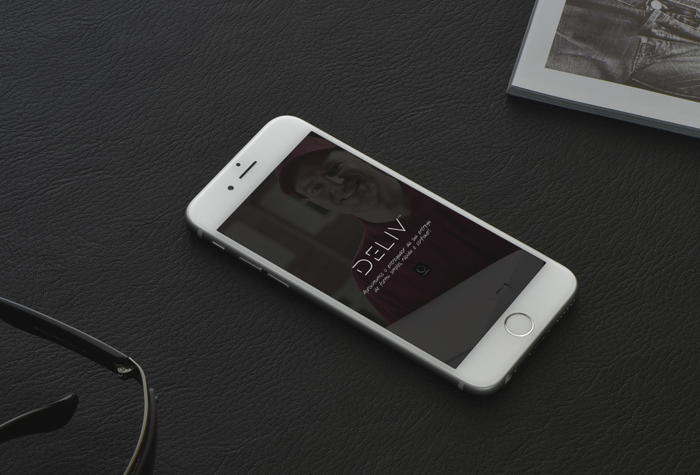
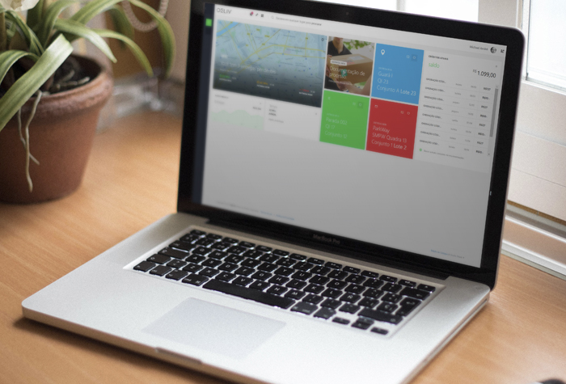
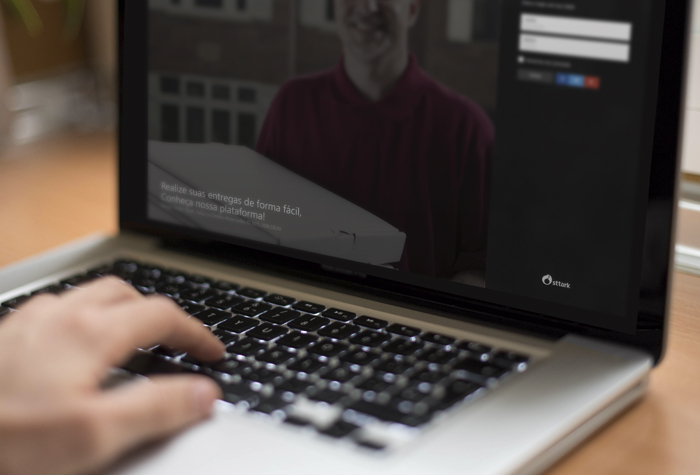
O Futuro da Carreira Profissional de TI
Slide HTML5 e Javascript
Uma nova geração de apresentações de Slides feita totalmente para web utilizando tecnologias HTML, CSS e
Javascript. Baseado na biblioteca shwr.me, facilitando a portabilidade, facilidade de edição e uma plataforma
Open Source. http://bit.ly/carreiraSttark
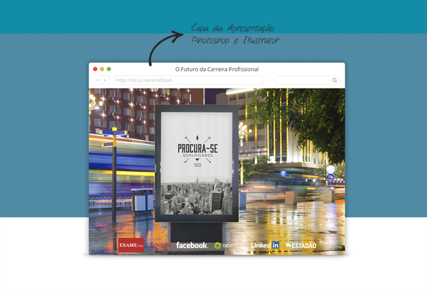
Frutos Atrativos do Cerrado
Website feito em Joomla / HTML5 / CSS3
A proposta era o redesign do antigo website ainda desenvolvido em Joomla 1.5 e também efetuar atualizações necessárias para que o portal continuasse estável e seguro. Então a proposta apresentada ao cliente foi um website com cores vivas, belas fotos e muita energia!
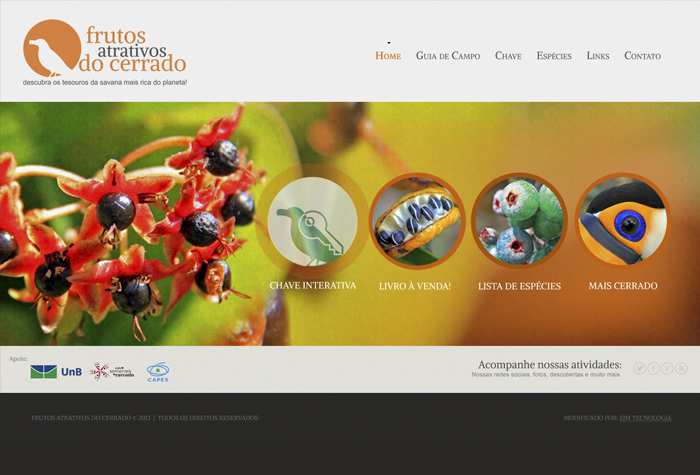
Facebook Page | AMBR No Rumo Certo
Utilizando SproutSocial / 22Social / OptmizePress e Criação de Design
Elaboração de planejamento e execução de campanhas direcionadas a campanha de eleição do presidente da Associação Médica de Brasilia, Utilizando conceitos de administração de perfil de negócios para Social Media, foram de minha responsabilidade desde a administração dos perfis das redes sociais até a criação de peças publicitárias relacionadas a campanha.
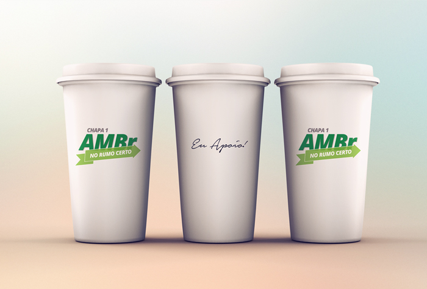
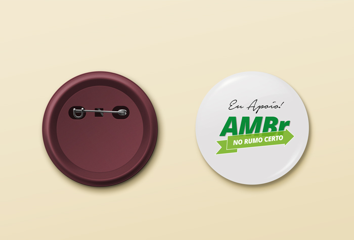
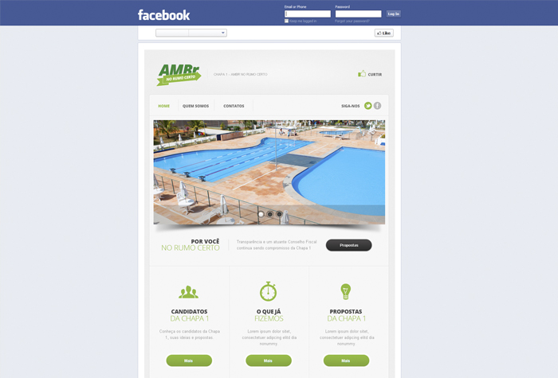
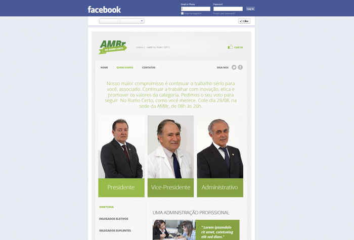
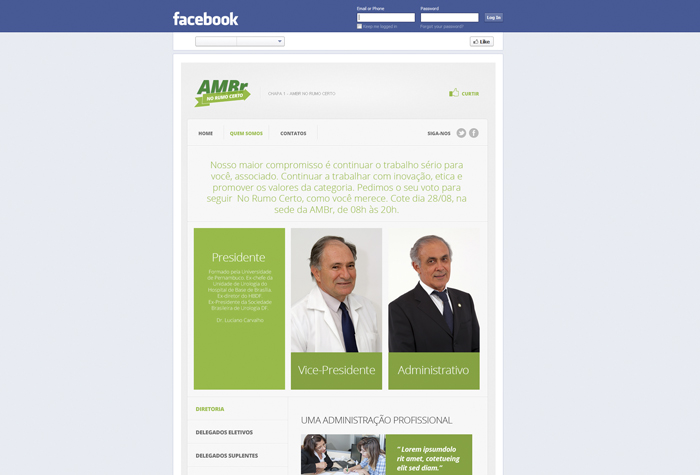
Relatório Impresso MAPROEx
Corel Draw / Adobe Photoshop / Adobe Indesign
Com o objetivo de demonstrar o rendimento individual de cada membro da equipe de requisitos de software com relação a produtividade, um relatório impresso foi criado para que estas informações chegassem as altas administrações do projeto de forma simples de ser compreendida.
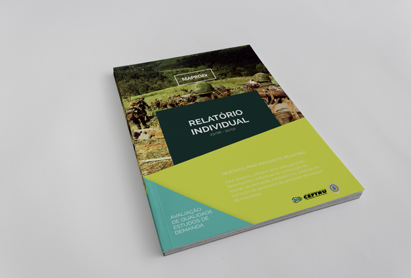
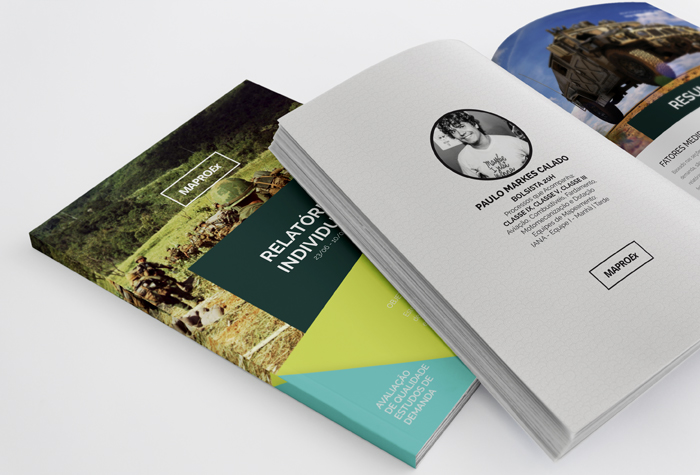
Contato
Vamos manter contato
Se gostou do meu portfólio e deseja contratar meus serviços, ou mesmo tirar dúvidas de algum assunto do qual tenho conhecimento, basta enviar mensagem em um dos meus canais. Espero seu contato!
Sérgio Silva
Brasília, DF
Ceilândia, Distrito Federal.